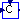
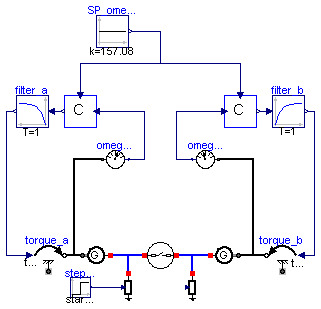

| Name | Description |
|---|---|
| TestElectrical1 | |
| TestElectrical2 | |
| TestNetworkGridGenerator_Pmax | |
| TestNetworkGridTwoGenerators | |
|  StaticController | |
| TestN2GControl | Test network with two generators, frequency controlled |
The model is designed to test the generator and load components of the Electrical library.
Simulation sequence:
Simulation Interval = [0...2] sec
Integration Algorithm = DASSL
Algorithm Tolerance = 1e-6
| Type | Name | Default | Description |
|---|---|---|---|
| Power | Pn | 10e6 | Nominal generator power [W] |
| Time | Ta | 10 | Turbine acceleration time [s] |
| Integer | Np | 2 | Number of generator poles |
| Frequency | f0 | 50 | Nominal network frequency [Hz] |
| AngularVelocity | omegan_el | 2*pi*f0 | Nominal electrical angular velocity [rad/s] |
| AngularVelocity | omegan_m | omegan_el/Np | Nominal mechanical angular velocity [rad/s] |
| MomentOfInertia | Je | Pn*Ta/omegan_el^2 | Moment of inertia referred to electrical angles [kg.m2] |
| MomentOfInertia | Jm | Np^2*Je | Mechanical moment of inertia [kg.m2] |
| Time | Topen | 10 | Time of breaker opening [s] |
model TestElectrical1
parameter Power Pn=10e6 "Nominal generator power";
parameter Time Ta=10 "Turbine acceleration time";
parameter Integer Np=2 "Number of generator poles";
parameter Frequency f0=50 "Nominal network frequency";
parameter AngularVelocity omegan_el=2*pi*f0
"Nominal electrical angular velocity";
parameter AngularVelocity omegan_m=omegan_el/Np
"Nominal mechanical angular velocity";
parameter MomentOfInertia Je=Pn*Ta/omegan_el^2
"Moment of inertia referred to electrical angles";
parameter MomentOfInertia Jm=Np^2*Je "Mechanical moment of inertia";
parameter Time Topen=10 "Time of breaker opening";
Electrical.Generator generator;
Electrical.Load load(Wn=Pn);
Modelica.Mechanics.Rotational.Inertia turboGenInertia(J=Jm);
Modelica.Mechanics.Rotational.Torque primeMover;
import Modelica.Constants.*;
Modelica.Blocks.Sources.Step Step1(
height=-Pn/omegan_m,
offset=Pn/omegan_m,
startTime=1);
equation
connect(generator.powerConnection, load.connection);
connect(turboGenInertia.flange_b, generator.shaft);
connect(primeMover.flange_b, turboGenInertia.flange_a);
initial equation
load.f=50;
equation
connect(Step1.y, primeMover.tau);
end TestElectrical1;
The model is designed to test the generator and load components of the Electrical library.
Simulation sequence:
Simulation Interval = [0...2] sec
Integration Algorithm = DASSL
Algorithm Tolerance = 1e-6
| Type | Name | Default | Description |
|---|---|---|---|
| Power | Pn | 10e6 | Nominal generator power [W] |
| Time | Ta | 10 | Turbine acceleration time [s] |
| Integer | Np | 2 | Number of generator poles |
| Frequency | f0 | 50 | Nominal network frequency [Hz] |
| AngularVelocity | omegan_el | 2*pi*f0 | Nominal electrical angular velocity [rad/s] |
| AngularVelocity | omegan_m | omegan_el/Np | Nominal mechanical angular velocity [rad/s] |
| MomentOfInertia | Je | Pn*Ta/omegan_el^2 | Moment of inertia referred to electrical angles [kg.m2] |
| MomentOfInertia | Jm | Np^2*Je | Mechanical moment of inertia [kg.m2] |
| Time | Topen | 10 | Time of breaker opening [s] |
model TestElectrical2
parameter Power Pn=10e6 "Nominal generator power";
parameter Time Ta=10 "Turbine acceleration time";
parameter Integer Np=2 "Number of generator poles";
parameter Frequency f0=50 "Nominal network frequency";
parameter AngularVelocity omegan_el=2*pi*f0
"Nominal electrical angular velocity";
parameter AngularVelocity omegan_m=omegan_el/Np
"Nominal mechanical angular velocity";
parameter MomentOfInertia Je=Pn*Ta/omegan_el^2
"Moment of inertia referred to electrical angles";
parameter MomentOfInertia Jm=Np^2*Je "Mechanical moment of inertia";
parameter Time Topen=10 "Time of breaker opening";
Electrical.Generator generator;
Electrical.Load load(Wn=Pn);
Modelica.Mechanics.Rotational.Inertia turboGenInertia(J=Jm);
Modelica.Mechanics.Rotational.Torque primeMover;
import Modelica.Constants.*;
Modelica.Blocks.Sources.Step GenTorque(
height=-0.1*Pn/omegan_m,
offset=Pn/omegan_m,
startTime=1);
Electrical.Grid grid(Pn=1e9);
Electrical.Breaker Breaker1;
Modelica.Blocks.Sources.Step LocalLoad(
height=0.1*Pn,
offset=Pn,
startTime=2);
Modelica.Blocks.Sources.BooleanStep BreakerCommand(startTime=3,
startValue=true);
equation
connect(turboGenInertia.flange_b, generator.shaft);
connect(primeMover.flange_b, turboGenInertia.flange_a);
connect(Breaker1.connection2, grid.connection);
initial equation
load.f=50;
equation
connect(BreakerCommand.y, Breaker1.closed);
connect(generator.powerConnection, Breaker1.connection1);
connect(load.connection, generator.powerConnection);
connect(LocalLoad.y, load.powerConsumption);
connect(GenTorque.y, primeMover.tau);
end TestElectrical2;
The model is designed to test the NetworkGrid model.
The model starts at steady state.
At 20s, step variation of the tourque supplied to the generator. Observe the electric power oscillations.
| Type | Name | Default | Description |
|---|---|---|---|
| Boolean | SSInit | true | Steady-state initialization |
model TestNetworkGridGenerator_Pmax
parameter Boolean SSInit = true "Steady-state initialization";
Electrical.Generator gen(J=10000, initOpt=if SSInit then Choices.Init.Options.steadyState else
Choices.Init.Options.noInit);
ThermoPower.Electrical.NetworkGrid_Pmax network(
J=10000,
Pmax=20e6,
hasBreaker=true,
deltaStart=0.488,
initOpt=if SSInit then Choices.Init.Options.steadyState else Choices.Init.Options.noInit);
Modelica.Mechanics.Rotational.TorqueStep constantTorque(
offsetTorque=1e7/157.08,
stepTorque=1e7/157.08*0.2,
startTime=20);
Modelica.Blocks.Sources.BooleanConstant booleanConstant(k=true);
Modelica.Mechanics.Rotational.Damper damper(d=25);
Modelica.Mechanics.Rotational.Fixed fixed;
Modelica.Mechanics.Rotational.Inertia inertia(J=1, w_start=157.08);
equation
connect(fixed.flange_b,damper. flange_b);
connect(inertia.flange_a, constantTorque.flange);
connect(gen.shaft, inertia.flange_b);
connect(damper.flange_a, inertia.flange_b);
connect(network.powerConnection, gen.powerConnection);
connect(network.closed, booleanConstant.y);
end TestNetworkGridGenerator_Pmax;

The model is designed to test the NetworkGridtwoGenerators model.
The model starts at steady state.
At 20s, step variation of the tourque supplied to a generator. Observe the electric power oscillations.
| Type | Name | Default | Description |
|---|---|---|---|
| Boolean | SSInit | true | Steady-state initialization |
model TestNetworkGridTwoGenerators
parameter Boolean SSInit = true "Steady-state initialization";
ThermoPower.Electrical.NetworkGridTwoGenerators network(
J_a=10000,
J_b=10000,
r_b=0.3,
v=15000,
Xline=1.625,
e_a=15000,
e_b=15000,
X_a=4,
X_b=4,
hasBreaker=false,
initOpt=if SSInit then Choices.Init.Options.steadyState else Choices.Init.Options.noInit);
Electrical.Generator gen_a(J=10000, initOpt=if SSInit then Choices.Init.Options.steadyState else
Choices.Init.Options.noInit);
Electrical.Generator gen_b(J=10000, initOpt=if SSInit then Choices.Init.Options.steadyState else
Choices.Init.Options.noInit);
Modelica.Mechanics.Rotational.Torque torque_a;
Modelica.Mechanics.Rotational.Torque torque_b;
Modelica.Blocks.Sources.Step NomTorque_a( offset=1e7/157,
startTime=20,
height=1e7/157*0.2);
Modelica.Blocks.Sources.Step NomTorque_b(height=0, offset=1e7/157);
equation
connect(gen_b.powerConnection, network.powerConnection_b);
connect(network.powerConnection_a, gen_a.powerConnection);
connect(NomTorque_b.y, torque_b.tau);
connect(NomTorque_a.y, torque_a.tau);
connect(torque_b.flange_b, gen_b.shaft);
connect(torque_a.flange_b, gen_a.shaft);
end TestNetworkGridTwoGenerators;
Controller for static control of the frequency.
| Type | Name | Default | Description |
|---|---|---|---|
| Real | droop | Droop | |
| Real | PVnom | 157.08 | Nominal value of process variable |
| Real | CVnom | Nominal value of control variable |
| Type | Name | Description |
|---|---|---|
| input RealInput | PV | |
| output RealOutput | CV | |
| input RealInput | SP |
model StaticController parameter Real droop "Droop"; parameter Real PVnom=157.08 "Nominal value of process variable"; parameter Real CVnom "Nominal value of control variable"; Real e "error"; Real deltaCV; Modelica.Blocks.Interfaces.RealInput PV; Modelica.Blocks.Interfaces.RealOutput CV; Modelica.Blocks.Interfaces.RealInput SP; equation e=(SP-PVnom)/PVnom-(PV-PVnom)/PVnom; deltaCV = 1/droop*e*CVnom; CV = deltaCV + CVnom; end StaticController;

At 20s, step variation of the load of a generator. Observe the electric power oscillations and the controlled angular velocity.
| Type | Name | Default | Description |
|---|---|---|---|
| Boolean | SSInit | true | Steady-state initialization |
model TestN2GControl
"Test network with two generators, frequency controlled"
parameter Boolean SSInit = true "Steady-state initialization";
ThermoPower.Electrical.NetworkTwoGenerators_Pmax network(
J_a=10000,
J_b=10000,
r_b=0.3,
Pmax=20e6,
deltaStart_ab=0.05,
initOpt=if SSInit then Choices.Init.Options.steadyState else Choices.Init.Options.noInit);
Electrical.Generator generator_a(J=10000, initOpt=if SSInit then Choices.Init.Options.steadyState else
Choices.Init.Options.noInit);
Electrical.Generator generator_b(J=10000, initOpt=if SSInit then Choices.Init.Options.steadyState else
Choices.Init.Options.noInit);
ThermoPower.Electrical.Load load_a(
Wn=10e6);
ThermoPower.Electrical.Load load_b(
Wn=10e6);
Modelica.Mechanics.Rotational.Sensors.SpeedSensor omegaSensor_a;
Modelica.Mechanics.Rotational.Sensors.SpeedSensor omegaSensor_b;
Modelica.Mechanics.Rotational.Torque torque_a;
Modelica.Mechanics.Rotational.Torque torque_b;
ThermoPower.Test.ElectricalElements.StaticController controller_A(
droop=0.05, CVnom=1e7/157.08);
ThermoPower.Test.ElectricalElements.StaticController controller_b(
droop=0.05, CVnom=1e7/157.08);
Modelica.Blocks.Sources.Step step_a(
startTime=50,
offset=8e6,
height=5e6);
Modelica.Blocks.Sources.Constant SP_omega(k=157.08);
Modelica.Blocks.Continuous.FirstOrder filter_a(
T=1,
y_start=1e7/157.08,
initType=if SSInit then Modelica.Blocks.Types.Init.SteadyState else
Modelica.Blocks.Types.Init.NoInit);
Modelica.Blocks.Continuous.FirstOrder filter_b(y_start=1e7/157.08,
initType=if SSInit then Modelica.Blocks.Types.Init.SteadyState else
Modelica.Blocks.Types.Init.NoInit);
equation
connect(generator_b.powerConnection, network.powerConnection_b);
connect(network.powerConnection_a, generator_a.powerConnection);
connect(load_a.connection, generator_a.powerConnection);
connect(load_b.connection, generator_b.powerConnection);
connect(omegaSensor_a.flange_a,torque_a. flange_b);
connect(torque_b.flange_b,omegaSensor_b. flange_a);
connect(controller_A.PV,omegaSensor_a. w);
connect(omegaSensor_b.w,controller_b. PV);
connect(step_a.y, load_a.powerConsumption);
connect(SP_omega.y, controller_b.SP);
connect(controller_A.SP, SP_omega.y);
connect(controller_A.CV, filter_a.u);
connect(filter_a.y, torque_a.tau);
connect(filter_b.u, controller_b.CV);
connect(torque_b.tau, filter_b.y);
connect(generator_a.shaft, torque_a.flange_b);
connect(generator_b.shaft, torque_b.flange_b);
end TestN2GControl;